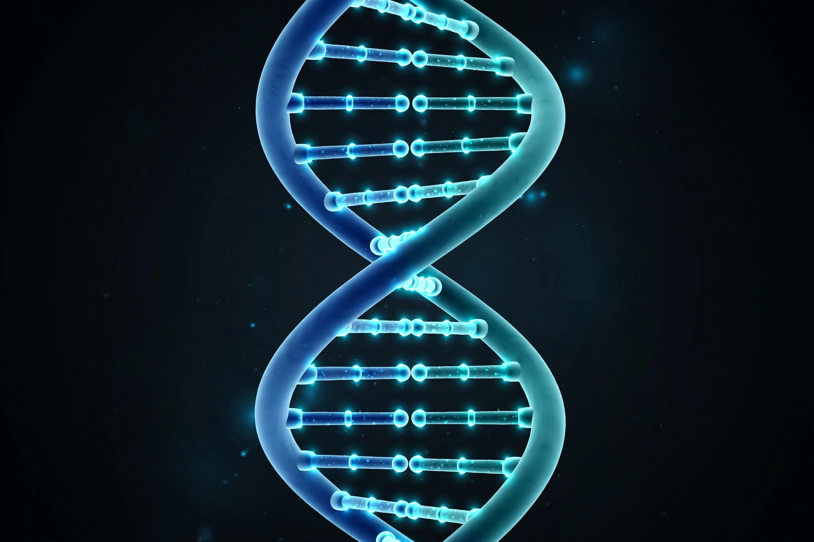
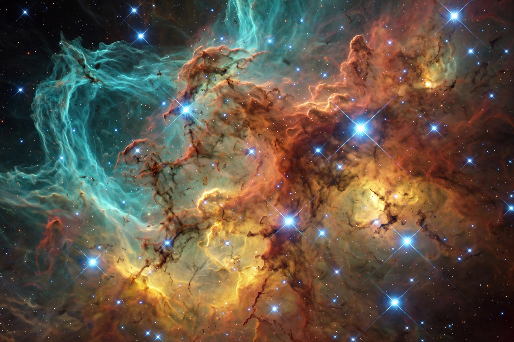

Introduction
Science is a systematic enterprise that builds and organises knowledge in the form of testable explanations and predictions about the universe. Modern science is typically divided into the natural sciences — such as physics, chemistry and biology — the social sciences, and the formal sciences such as mathematics. Its methods emphasise careful observation, measurement, experimentation and the formulation and testing of hypotheses.
Selected article

[Image: the double-helix structure of DNA rendered as a twisting ladder]DNA (deoxyribonucleic acid) is the molecule that carries genetic instructions for the development, functioning, growth and reproduction of most known organisms. Its double-helix structure was described in 1953 by James Watson, Francis Crick, Rosalind Franklin and colleagues. Sequences of its four bases encode genes, which cells use to build proteins.
Did you know...
- ... that light from the Sun takes about eight minutes to reach Earth?
- ... that the human genome contains roughly three billion base pairs?
- ... that octopuses have three hearts and blue, copper-based blood?
Branches of science
- Physical sciences: Physics · Chemistry · Astronomy · Earth science
- Life sciences: Biology · Evolution · Genetics · Ecology · Medicine
- Key figures: Albert Einstein · Marie Curie · Charles Darwin · Isaac Newton
- Institutions: NASA · Royal Society · Nature
Selected picture

[Image: a colourful nebula photographed by a space telescope, clouds of gas lit by young stars]Nebulae are vast clouds of interstellar gas and dust, many of them stellar nurseries where new stars form under gravity. Space telescopes operated by agencies such as NASA and the European Space Agency image them across visible and infrared wavelengths.